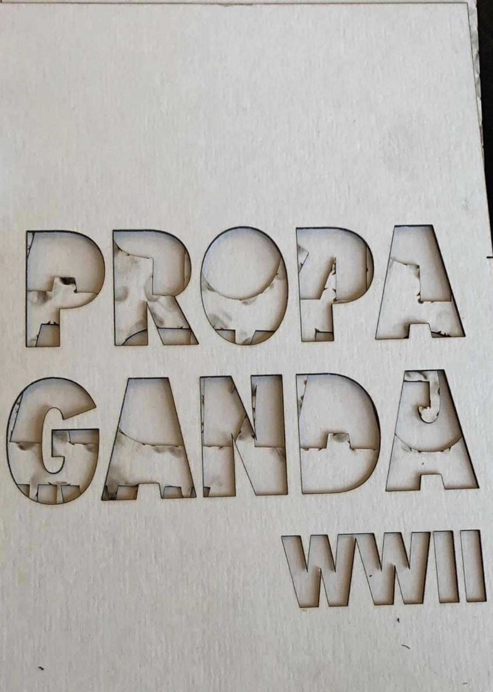
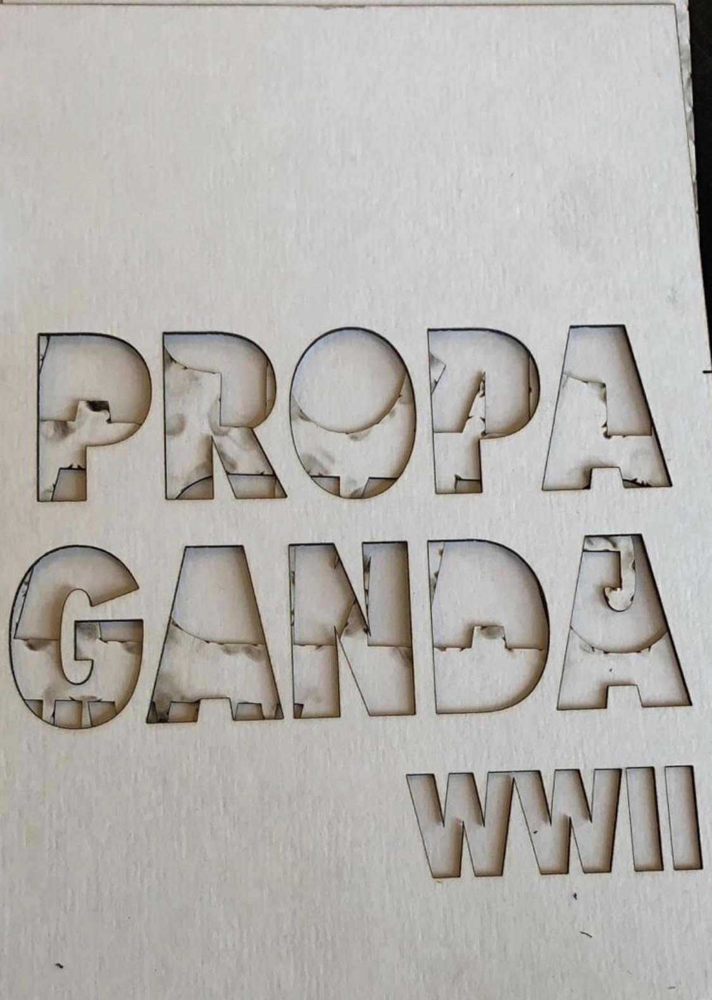

Project
Ontwerpen 1
"Gedurende het eerste project heb ik een boekje moeten maken waarin Semiotiek, Retorica, Gestalt en Typografie hoofdonderdeel waren. Hierbij moest je een fotocollectie maken over een onderwerp waar je geïnteresseerd in bent. Ik heb hier voor een uitwerking over propagandaposters gekozen, waar ik de kijker laat zien hoe deze veranderde gedurende verschillende fases binnen de oorlog. Hierbij heb ik gekozen voor sprekende beelden die goed een verschil laten zien".
 
